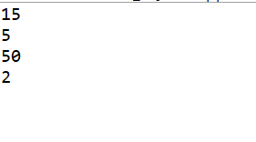
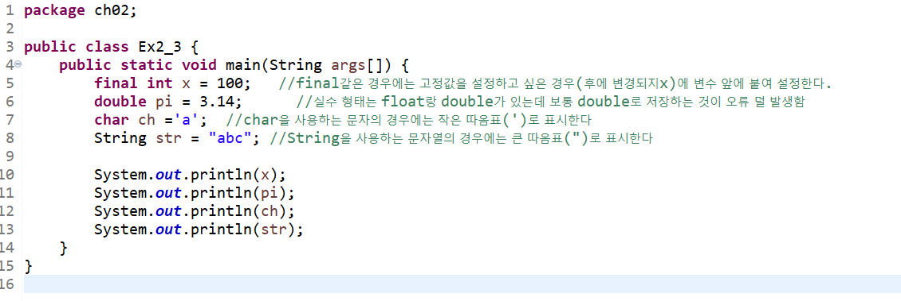
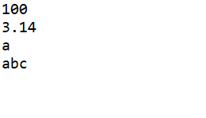
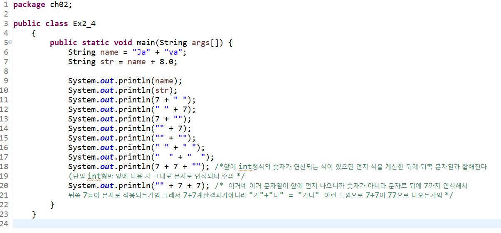
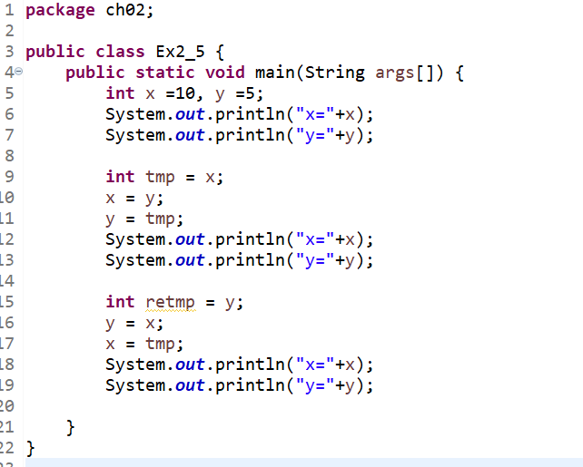

위 코드는 int 변수를 통해 사칙연산을 진행하는 코드이다.
결과값
위 코드는 final코드를 통한 상수값 지정, double형태의 실수값 지정, char형태의 문자 지정, String형태의 문자열을 지정한 코드이다.
결과값

위 코드는 int형식의 숫자형과 String 형식의 문자열을 + 를 통해
조합시켰을때 일어날 수 있는 결과값이다.
위 사진에 메모된 것 처럼 String형식과 조합하면 문자값으로 보통
인식되지만, 앞쪽에 int변수끼리의 연산이 존재하면, 변수끼리의 연산을 먼저
수행한 뒤 문자열과 합해지는 형태의 결과값을 볼 수 있다
결과값

위 코드는 int값으로 연산을 수행하다 tmp값으로 int값을 서로 바꾸는
코드이다.
tmp를 재사용해서 다시 변수를 원상태로 돌릴 수 있다/
결과값